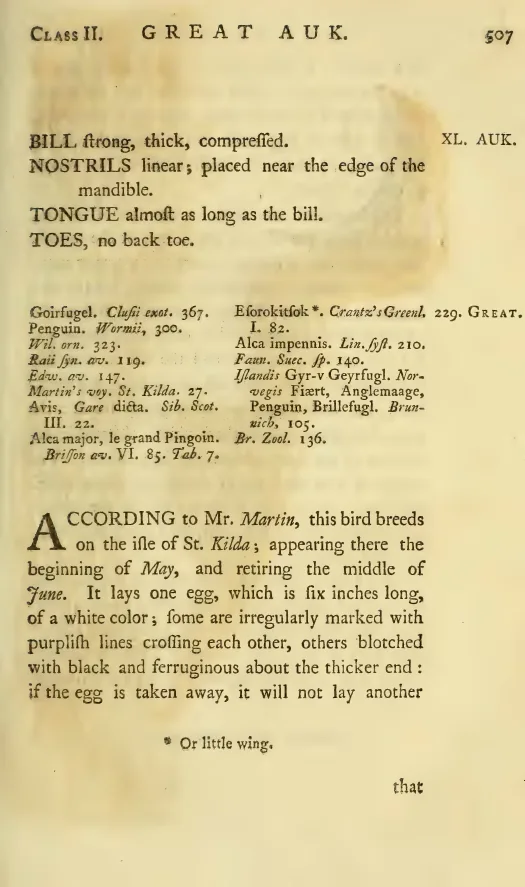

British Zoology, vol. II, pp. 507–508. A description of the great auk’s body and breeding season, drawing on Martin Martin’s account of St Kilda.
Original text
TranscriptionAccording to Mr. Martin1, this bird breeds on the isle of St. Kilda, appearing there the beginning of May, and retiring the middle of June. It lays one egg, which is six inches long, of a white color; some are irregularly marked with purplish lines crossing each other, others blotched with black and ferruginous about the thicker end: if the egg is taken away, it will not lay another that season.
A late writer informs us, that it does not visit that island annually, but sometimes keeps away for several years together; and adds, that it lays its egg close to the sea-mark; being incapable, by reason of the shortness of its wings, to mount higher.
The length of this bird, to the end of its toes, is three feet; the bill, to the corner of the mouth, four inches and a quarter: part of the upper mandible is covered with short, black, velvet-like feathers; it is very strong, compressed and marked with several furrows that tally both above and below: between the eyes and the bill on each side is a large white spot: the rest of the head, the neck, back, tail and wings, are of a glossy black: the tips of the lesser quill-feathers white: the whole under side of the body white: the legs black. The wings of this bird are so small, as to be useless for flight: the length, from the tip of the longest quill-feathers to the first joint, being only four inches and a quarter.
Page scan
1776
Edition
Fourth edition. Warrington: William Eyres for Benjamin White, 1776. Volume II, pages 507–508; plate LXXXI.
Further reading
- 01Gísli Pálsson, The Last of Its Kind ↗
Princeton University Press, 2024. - 02Jessica E. Thomas et al., “Demographic reconstruction” ↗
eLife 8 (2019), e47509.